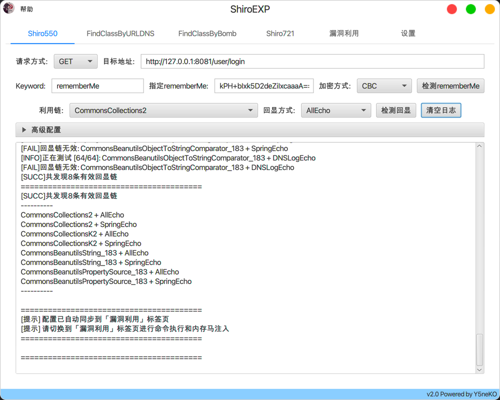
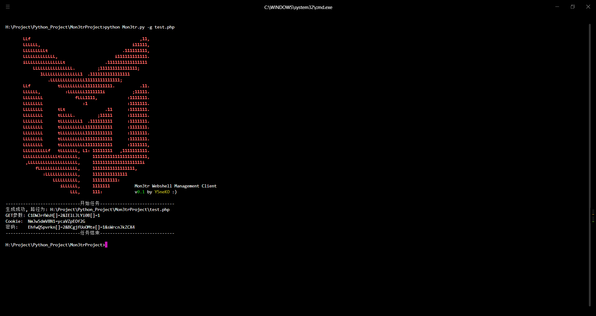

ShiroEXP
★ …Shiro漏洞综合利用工具
- 爆破rememberMe
- 漏洞探测(Shiro550、Shiro721)
- 探测回显链
- 探测依赖（FindClassByURLDNS、FindClassByBomb）
- 命令执行
- 注入内存马
- 全局代理
const Y5neKO = {
alias: 'Y5ねこ / Y5n3K0',
role: '网络安全 / 渗透测试 / CTFer',
location: 'Chengdu, China',
team: 'Y5Sec',
skills: ['Java', 'Python', 'PHP', 'C'],
learning: ['Reverse', 'PWN', 'CodeAudit'],
hobbies: ['Anime', 'Novel', 'Music'],
vulns: [⋯
'CVE-2024-39071', 'CVE-2024-39072',
'CNVD-2024-29955', 'CNVD-2024-39609',
'CNVD-2024-39888', 'CNVD-2024-42668',
'CNVD-2024-43066', 'CNVD-2024-44216',
'CNVD-2024-45972', 'CNVD-2026-23984',
'CNVD-2026-25278',
],
motto() {
return 'Walk between the black and white.';
}
};
Shiro漏洞综合利用工具
基于Python的Web综合漏洞扫描器,名字取自 Arknights® Closure

Mon3tr流量加密客户端,名字取自 Arknights® Mon3tr
前端加解密 BurpSuite 插件,加解密请求响应数据,方便渗透测试中分析 HTTP 流量
基于 JavaFX 开发的渗透测试快速启动工具
基于 JavaFX 开发的图形化安服/渗透测试报告自动生成工具,安服渗透仔摸鱼划水必备
适用于 Node.js 环境下的 Suo5 内存马
基于 Web 的 SOCKS5 隧道代理工具,通过 PHP/JSP/JSPX/ASPX/ASP 脚本在目标服务器建立加密隧道